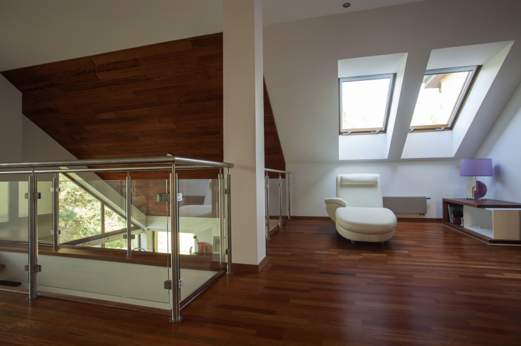

Wat kost HR++ glas inclusief plaatsen?
Wie online zoekt naar de prijs van HR++ glas, krijgt bedragen te zien die opvallend ver uit elkaar liggen. Dat komt niet alleen doordat glasbedrijven verschillende tarieven rekenen: veel prijsvoorbeelden vergelijken simpelweg niet hetzelfde.

Waarom één prijs per m² misleidend kan zijn
De ene prijs gaat over alleen het glas, de andere over glas én montage, en bij een derde zijn afvoer, glaslatten, bereikbaarheid en herstelwerk al meegerekend. De oppervlakte van het glas is maar één onderdeel van de klus. Een kleine ruit op driehoog kan meer montagetijd vragen dan een grote ruit op de begane grond, en kleine ruiten worden niet vanzelf goedkoop: iedere ruit moet afzonderlijk worden ingemeten, besteld, vervoerd, verwijderd, gesteld en afgewerkt.
Een bruikbare richtprijs begint dan ook bij een duidelijke scope. Vraag altijd of het bedrag inclusief btw, inmeten, levering, montage, glaslatten, kitwerk, afvoer van oud glas en eventuele hulpmiddelen is. Zonder die informatie vergelijk je geen prijzen, maar koppen boven offertes. Twijfel je of een offerte die je al hebt liggen compleet is? Stuur hem gerust naar ons toe, dan kijken we er kosteloos naar mee.
Deze factoren bepalen de uiteindelijke prijs
Wat een offerte precies duur of goedkoop maakt, zit hem meestal in dezelfde reeks onderdelen. Om te beginnen bepaalt de glasopbouw al veel: standaard HR++ glas is anders geprijsd dan gelaagd veiligheidsglas, geluidswerend glas, zonwerend glas, figuurglas of een combinatie daarvan, en het scheelt behoorlijk welke keuze je maakt. Daarnaast telt het aantal en formaat van de ruiten mee. Tien kleine ruiten vragen simpelweg meer handelingen dan één ruit met dezelfde totale oppervlakte, terwijl zeer grote of zware ruiten juist weer extra mensen of hijsmiddelen kunnen vereisen.
Ook de staat van het kozijn speelt een rol die je er vooraf niet altijd aan afziet. Houtrot, beschadigde glaslatten, slechte kitnaden of onvoldoende sponningdiepte kunnen herstel of aanpassing noodzakelijk maken, en dat werk komt bovenop de glasprijs. Hetzelfde geldt voor bereikbaarheid: een raam op hoogte, boven een serre, in een smalle binnentuin of langs een drukke weg kan een steiger, kraan, vergunning of verkeersmaatregel vragen, en dat merk je direct in de rekening. Ventilatieroosters vormen nog zo'n post. Een bestaand rooster kan soms worden hergebruikt, maar niet altijd, en een nieuw rooster verandert zowel de glasafmeting als de prijs. Tot slot vallen nieuwe glaslatten en kitwerk vaak binnen de glasopdracht, maar schilderwerk of uitgebreid timmerherstel meestal niet, tenzij dit expliciet is opgenomen. Twijfel je over de staat van jouw kozijn? Stuur ons een paar foto's via het contactformulier, dan geven we je alvast een eerste inschatting.
Wat je bij ons in de offerte terugvindt
Wij zetten dit standaard duidelijk op de offerte, en raden je aan hetzelfde te controleren bij iedere aanbieder waarmee je in zee gaat. Er moet duidelijk staan welk glastype je krijgt: het type, de volledige opbouw, de Ug-waarde en een eventuele veiligheids- of geluidsfunctie. Ook de montage hoort helder omschreven te zijn, van het uithalen van het oude glas tot plaatsen, stellen, kitten en glaslatten. Kijk daarnaast of materieel als steiger, kraan, hoogwerker, parkeerkosten of een vergunning is meegenomen, en of de afvoer van oud glas, oude glaslatten en verpakkingsmateriaal is inbegrepen. Staat er herstelwerk op de planning, dan is het goed om te weten of kozijnreparatie, timmerwerk en schilderwerk wel of niet in de prijs zitten.
Kom je in aanmerking voor subsidie, vraag dan naar de meldcode, het aantal vierkante meters en de gegevens die je nodig hebt voor de aanvraag. En check tot slot de garantie: niet alleen op het product, maar ook op de plaatsing, inclusief de voorwaarden die daarbij horen.
Waarom de goedkoopste offerte duurder kan uitpakken
Een lage offerte kan prima zijn, maar controleer of essentiële onderdelen ontbreken. Wordt pas tijdens de montage duidelijk dat glaslatten, roosters of kozijnherstel extra kosten? Dan verdwijnt het prijsvoordeel snel. Andersom hoeft een hogere offerte niet automatisch beter te zijn: een transparante offerte maakt vooral zichtbaar waar je voor betaalt en welke onzekerheden nog openstaan. Bij ons krijg je altijd een offerte waarin dit allemaal is uitgeschreven, zodat je vooraf precies weet waar je aan toe bent.
Welke vragen je ons het beste kunt stellen
Vraag ons gerust of we dezelfde ruiten en dezelfde glasfuncties hebben meegenomen als in een andere offerte die je hebt liggen, en vraag ook naar de volledige glasopbouw en Ug-waarde in plaats van alleen de naam HR++. Wij leggen je graag uit of bereikbaarheid, afvoer, glaslatten, roosters en afwerking zijn meegenomen, en welke werkzaamheden eventueel als meerwerk worden berekend. Vraag ons ook gerust om de staat van je kozijnen vooraf te beoordelen, welke gegevens en meldcodes je van ons ontvangt voor een eventuele subsidieaanvraag, en wat onze garantie precies inhoudt op zowel product als plaatsing. Twijfel je nog of je bestaande kozijnen geschikt zijn? Wij schreven er een apart artikel over: kan HR++ glas in bestaande kozijnen?
Vraag niet alleen "wat kost het glas?"
De betere vraag is: wat kost het om deze ruiten in deze woning goed en volledig te vervangen? Wij kijken daarom niet alleen naar vierkante meters, maar ook naar kozijnen, bereikbaarheid, veiligheid, afwerking en de functie die het nieuwe glas moet vervullen. Ook interessant als je toch aan het rekenen bent: er gelden in 2026 nog altijd regelingen voor wie isoleert, en we zetten de voorwaarden op een rij in subsidie voor HR++ en triple glas in 2026.
Een prijs voor jouw situatie
Stuur ons foto's, globale maten en informatie over de bereikbaarheid via ons contactformulier. Voor een definitieve offerte meten we de ruiten en beoordelen we de kozijnen vervolgens op locatie. Liever meteen bellen? Wij denken graag telefonisch met je mee voordat je ergens anders een offerte aanvraagt.